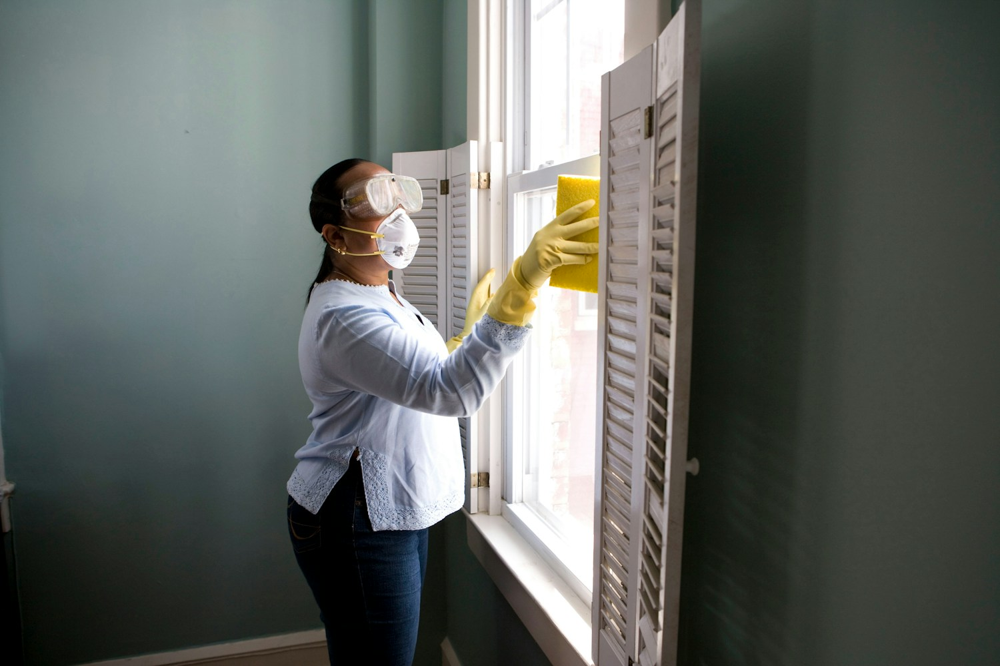
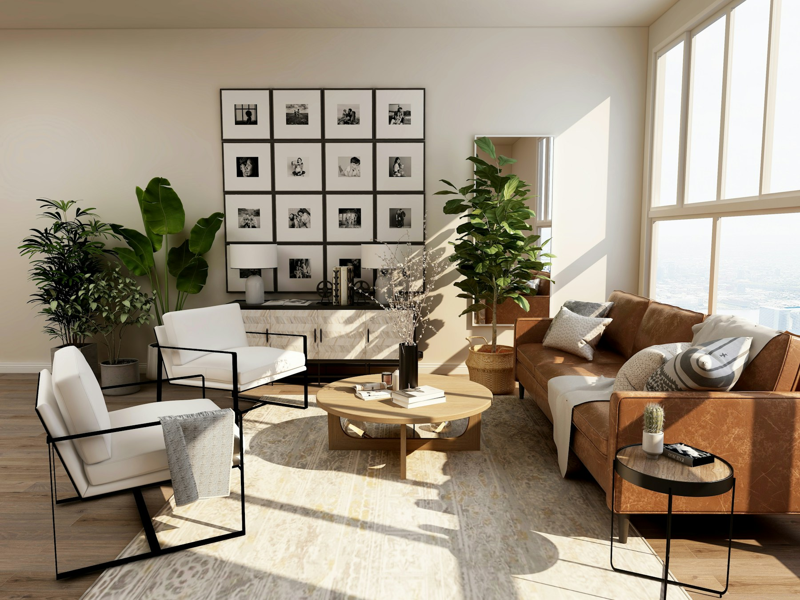

Ocena miejsca
i potrzeb.
Rodzaj przestrzeni, metraż i zakres. Możesz dopisać, co jest dla Ciebie najważniejsze.

Pył, zabrudzenia po pracach, przeszklenia i posadzki.
Przygotowujemy wnętrza do kolejnego etapu:
odbioru, wyposażenia albo wprowadzenia.
Po zakończeniu prac wnętrze potrzebuje innego podejścia niż przy zwykłych porządkach. Ustalamy rodzaj zabrudzeń, powierzchnie i kolejność zadań. Celem jest przestrzeń przygotowana do uzgodnionego etapu — bez przypadkowego zakresu.
Stan wnętrza, materiały i priorytety.
Zakres potwierdzamy przed rozpoczęciem.

MIEJSCE, DO KTÓREGO CHCESZ WRACAĆ.Kuchnia, łazienka i codzienne przestrzenie. Jednorazowe odświeżenie albo regularny rytm porządku — ustalimy to razem.
Nie każda powierzchnia
lubi tę samą metodę.
Zaczynamy od rozpoznania materiałów i rodzaju zabrudzeń. Ustalamy dostęp, kolejność prac i obszary wymagające szczególnej uwagi. Usuwanie trudnych pozostałości potwierdzamy po ocenie powierzchni.
Ustalamy listę zadań przed rozpoczęciem.
Sposób pracy dobieramy do powierzchni i warunków.
Wiesz, co zostało ustalone i jaki jest kolejny krok.
Rodzaj przestrzeni, metraż i zakres. Możesz dopisać, co jest dla Ciebie najważniejsze.
Potwierdzamy zadania, dostęp do miejsca i termin. Wycena zależy od zakresu i warunków.
Pracujemy według ustaleń. Po zakończeniu wspólnie sprawdzamy uzgodniony zakres.
Od metrażu, rodzaju usługi, stanu przestrzeni i uzgodnionych dodatków. Na stronie nie podajemy automatycznej ceny — najpierw potrzebujemy poznać zakres.
Zakres usuwania pyłu i pozostałości ustala się po ocenie ich rodzaju i materiału podłoża. Trudnych zabrudzeń nie traktujemy automatycznie jednym środkiem. Odbiór gruzu i odpadów budowlanych nie jest częścią tej przykładowej oferty.
Sposób udostępnienia przestrzeni i odbioru prac ustala się przed wizytą. Nie trzeba przekazywać kluczy ani danych dostępu przez formularz.
To strona demonstracyjna fikcyjnej firmy. Formularz tworzy podsumowanie, ale nie wysyła wiadomości i nie dokonuje rezerwacji.
Przekaż metraż, stan wnętrza i planowany termin.
Ustalimy zakres, który odpowiada miejscu.